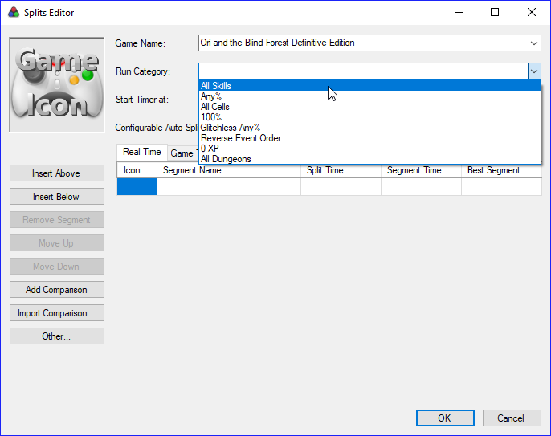
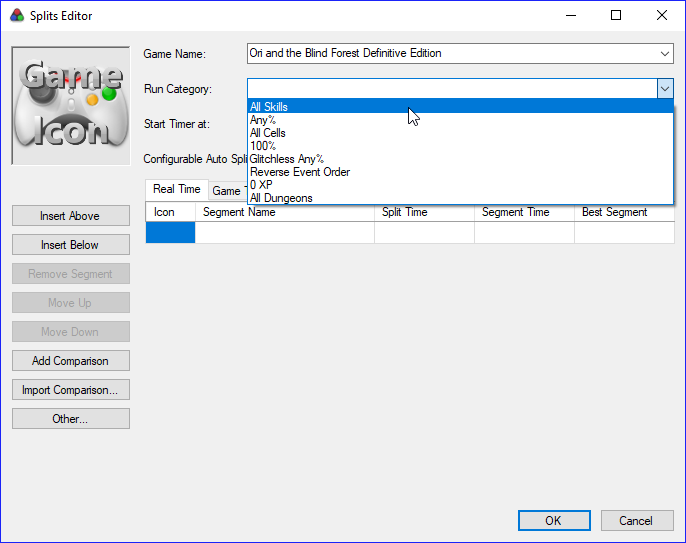

Autosplitter¶
The autosplitter is a LiveSplit tool which splits when a condition based on a game event is filled. The latest versions of LiveSplit embed an autosplitter for Ori and the Blind Forest created by DevilSquirrel.
Enabling the autosplitter¶
To enable the autosplitter, you first need to set the game and the category you’re running and LiveSplit will detect if there is an autosplitter available for it. Here we want to set
- Game Name: Ori and the Blind Forest Definitive Edition
- Run Category: All Skills
To do so, go to Edit Splits…
 

{kind=link}
Note
If you’re running a subcategory (No OOB/TA is a sub category of All Skills
alongside No Restrictions), you may also need to set it in the
Additional Info tab. Here you want to set the All Skills sub
category No OOB/TA.
{kind=link}
Now you should see that a configurable autosplitter is available for this game. You should now be able to Activate it.
Activate the autosplitter
Configuring the autosplitter¶
In order to configure the autosplitter, Settings button next to the Activate one. You should have something like this:
Default autosplitter settings
For now there are only 2 autosplits set, Start Game and End Game which
will respectively start the timer when you chose the difficulty and stop it when
you lose the control of Naru at the end of the run.


You are basically good to go. Nevertheless you might want to add some splits in the middle of the run to track your progress, see where you lose time from one run to another and compute what we call a Sum of Bests.
Combination of autosplits¶
Some events might be hard to transcribe into an autosplit. In fact, if the event you want to catch is a bit complex (e.g: Save & Quit, Entering Horu after collecting 10 Ability Cells), a unique autosplit is not enough. However, it is possible to stack them to make LiveSplit split when all the conditions are filled. The checkboxes on the right of each autosplit is what makes it possible.
- If the checkbox is checked off: LiveSplit will split when the condition is filled.
- If the checkbox is not checked off: LiveSplit will check the condition without splitting but will add this requirement to the next split that has its checkbox checked off
As an example, this is the sequence of autosplits required to